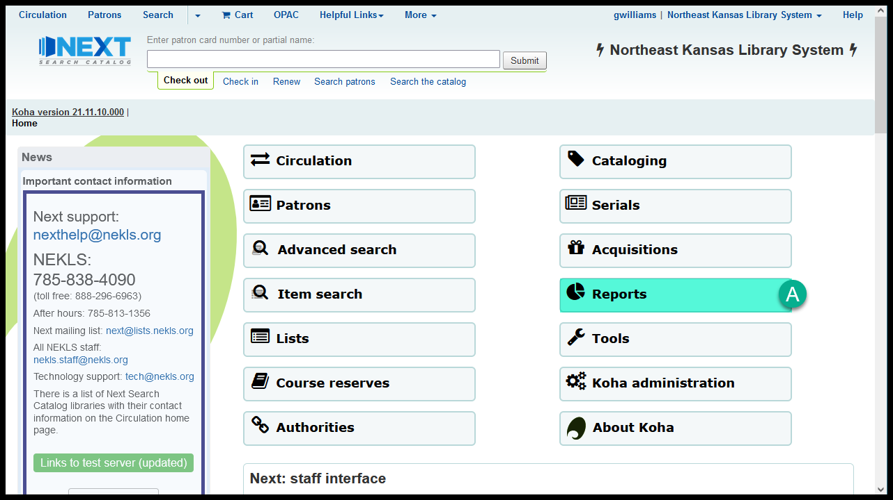
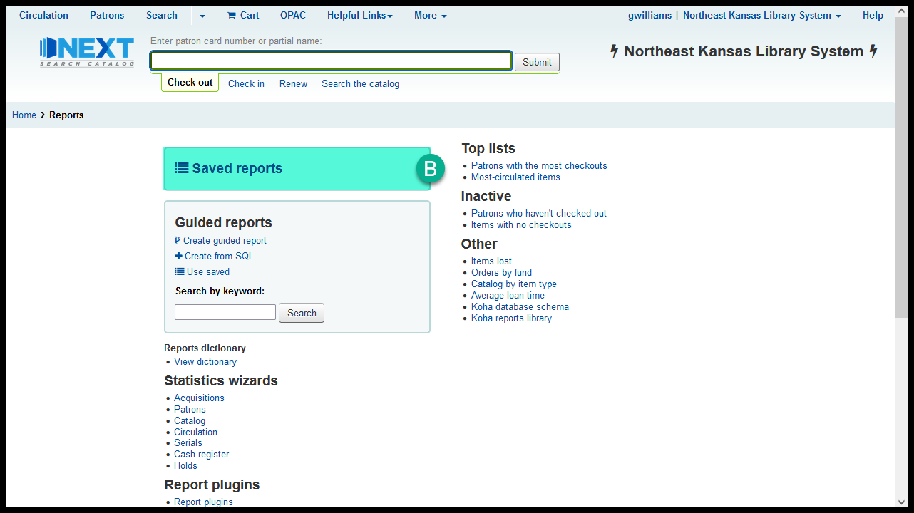
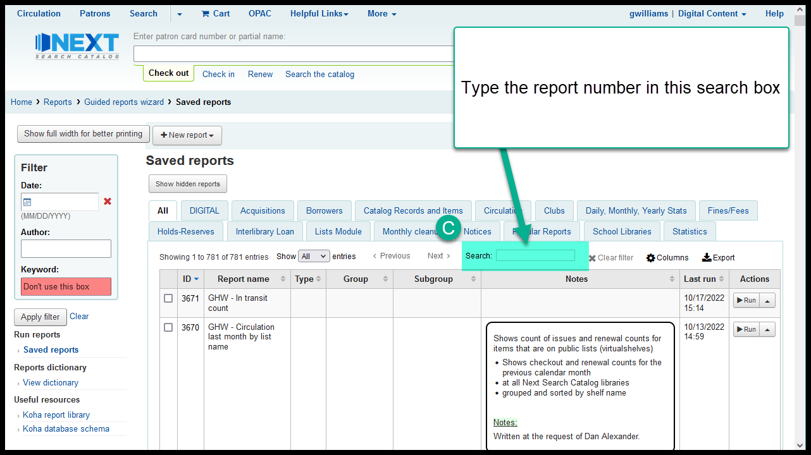
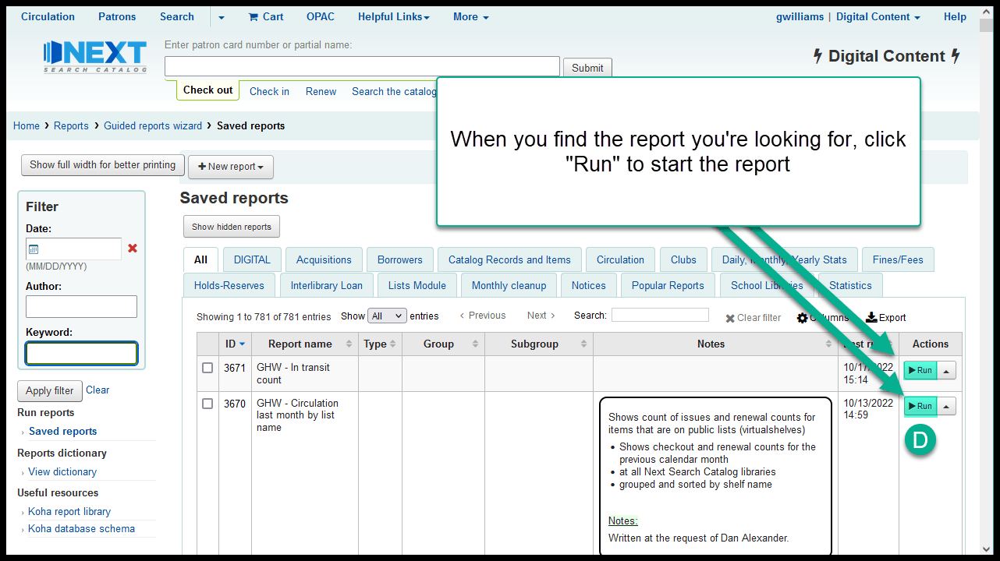

Finding a report by number
If you have a report number, follow these steps to find the report:
From the home page in Next Search Catalog, click on “Reports”

Then click on “Saved reports”

Type the report number into the search box
We recommend the “Search” box - not the “Keyword” filter

When you’ve located the report you want, click on “Run”
